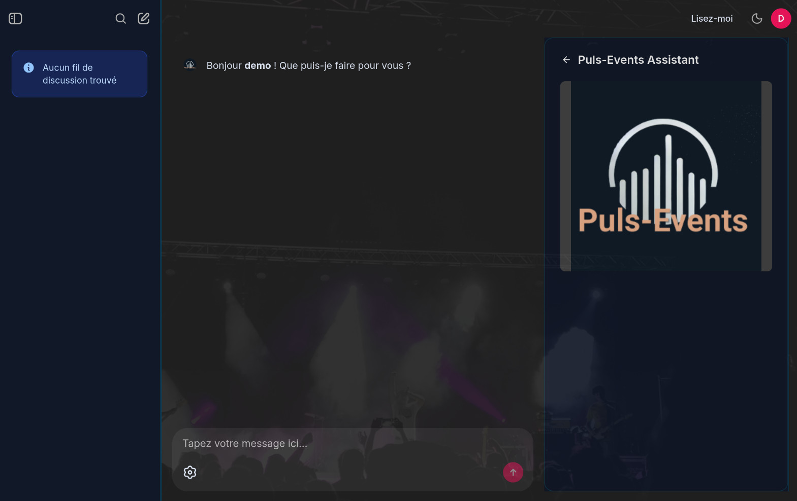

← portfolio • projet P13 — RNCP Niveau 7
// moteur de recommandation culturelle — RAG national
Transformation d'un POC régional en MVP scalable à l'échelle nationale. Un chatbot conversationnel qui comprend vos envies culturelles et recommande des événements en temps réel, avec mémoire conversationnelle, fallback web et monitoring complet.

Suite à un POC validé en Occitanie (P11), l'objectif était de corriger les limites du prototype et de passer à une architecture de production supportant la France entière, avec des utilisateurs simultanés, un fallback web et un monitoring complet.
| Composant | Technologie | Justification |
|---|---|---|
| Interface conversationnelle | Chainlit | Streaming natif, gestion historique, login intégré — aucun dev front requis |
| API backend | FastAPI + uvicorn | Async natif, typage Pydantic, healthcheck Docker |
| Moteur RAG | LangChain | Abstraction LLM/vectorstore, support Azure et local (FAISS) sans changement de code |
| Index vectoriel | Azure AI Search | Recherche hybride (BM25 + vecteur) + filtres OData sur métadonnées temporelles |
| LLM | Azure OpenAI GPT-4o | Déploiement managé Azure, conformité RGPD, streaming async |
| Embeddings | text-embedding-3-small | Rapport qualité/coût optimal, 1536 dimensions |
| Fallback web | smolagents + DuckDuckGo | Agent CodeAgent déclenché si index retourne 0 résultat — whitelist 10 sites événementiels FR |
| Mémoire utilisateurs | Cosmos DB | NoSQL schemaless, latence faible, SLA 99.99% |
| Historique + télémétrie | PostgreSQL (Flexible Server) | Data layer Chainlit + tables monitoring rag_telemetry, ingestor_runs, feedbacks |
| Stockage pipeline | Azure Blob Storage | Bronze/Silver/Gold — pattern médaillon, coût minimal |
| Monitoring | Grafana Cloud + asyncpg | Tier gratuit — datasources Azure Monitor (Container Apps) + PostgreSQL custom |
| Déploiement | Azure Container Apps | Scale-to-zero, ingestion en Job schedulé, no k8s overhead |